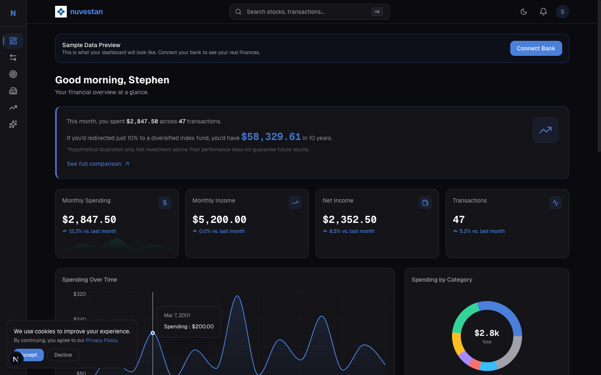

R&D Lab
Proving Grounds
Technical proving grounds where architecture patterns get stress-tested before going into production work. Healthcare data, finance, sports analytics, education: each one pushed a different skill that made the next company better.

Live
CartoChrome Health Score
Rates every US ZIP code 0–100 for healthcare access. 4M+ providers, E2SFCA spatial scoring.

Live · New
Nuvestan
AI-powered personal finance for first-generation wealth builders.

Live
CourtVision NBA Analytics
Live scores, player comparisons, shot charts. Built in 3 days. $0/month.